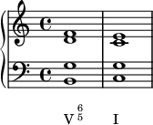
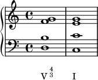
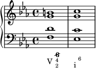
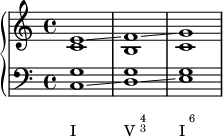
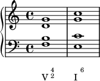
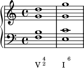

Pedgagogy Class
Table of Contents
1. Why do we have inversions?
Smooth out the bass line, interplay with upper voices
Inversions are often more on the embellishing chord side of the spectrum
2. Review V^7

Note the 7th goes down by step (always!), leading tone is raised, and you have a tripled root.
3. Inversions of the V^7
These are all resolved strictly
3.1. V65
3.1.1. Major Key

Note the figured bass, 3 is implied, 5 is also implied, but if 6 is present 5 needs to be there too. Everything resolves as it should. Note that instead of root to root, you have root to fifth and it makes a complete chord.
3.1.2. Minor Key

Note there is no change in figured bass because the accidental is in the bass
3.2. V43
3.2.1. Major Key

Resolves exactly the same way.
3.2.2. Minor Key

Draw attention to the fact that you need the 6 because it has an accidental now
3.3. V42
3.3.1. Major Key

Again, things resolve correctly
3.3.2. Minor Key

Again, the raised 6 in the figured bass, 4 is necessary as well
4. Alternate Resolutions
4.1. V43 to a I6

You get a doubled third. To avoid this you have to do the next exception.

This is the only time you can not resolve the seventh down, because of the parallel 10ths between soprano and bass being more powerful.
4.2. V42 Beethoven
There are a couple of exceptions because of Beethoven

This is only if scale degree 5 is in the soprano, and jumps up to scale degree 8, scale degree 2 will also have to jump up to 5

Only if scale degree 2 is in the soprano, and jumps to scale degree 5.
A great example of this from Sonata no. 8, op. 13 "Pathetique" II. Adagio Cantabile